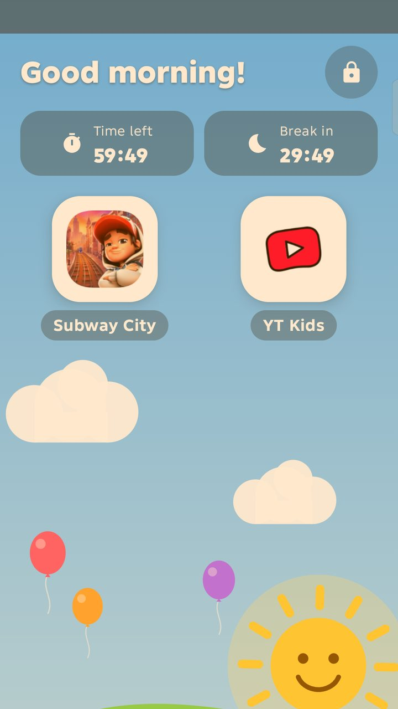

Only your apps
A friendly Kids home screen with just the apps you picked. Links to other apps, the store or the browser are blocked too.
Only the apps you choose, nothing else. The notification bar, settings, the power menu and your messages stay out of reach until you unlock with your PIN, fingerprint or face.

Open apps you didn't allow, Settings, the Play Store or the browser
Pull down the notification bar or quick settings
Open recent apps, the assistant or the power menu
Uninstall Kids Mode
See your notifications and messages
A friendly Kids home screen with just the apps you picked. Links to other apps, the store or the browser are blocked too.
Pair once with your phone's own Wireless debugging and Kids Mode switches off the notification bar, recent apps and power-button shortcuts at system level.
Set a session time in hours, minutes and seconds. When it runs out, apps lock behind a "Time's up!" screen. Add more time with your PIN.
After a set time of play, the open app closes and a break timer shows, with a reminder one minute before.
The sound can't go above the level you set, whether your child uses the buttons or a slider inside an app.
A warm screen filter, plus a too-close warning using the proximity sensor or the front camera, checked on the phone with nothing saved.
When a call rings, the call screen comes to the front so it can be answered, and a Back to call button returns to it.
See how long each app was used in Kids Mode today and over the last 7 days.
A sunny day sky, or a calm night sky in dark mode that's gentler on young eyes. In English and Arabic, right to left.
Tick the apps your child may use. Selected apps are shown at the top.
One Start button walks you through setup the first time, asking only for what's missing: a PIN, your consent and the optional full lock.
To leave, hold the lock button for 2 seconds, then use your PIN, fingerprint or face. Only you can leave.
Kids Mode has no account, no ads and no tracking. Your settings and usage times stay on the device, and your PIN is stored only as a secure hash.
Read the privacy policyWhile Kids Mode is on, it checks which app and system windows are on screen and sends your child back to the Kids screen if they open something you didn't allow. It doesn't read or store screen content or what's typed, and it does nothing while Kids Mode is off.
Used only to stop your child from uninstalling Kids Mode. You can turn it off in the app at any time.
The Home button opens the Kids screen while Kids Mode is on. When it's off, Home goes straight to your normal home screen.
With Wireless debugging paired once, Kids Mode can switch off the notification bar and power-button shortcuts completely. This connection stays inside your own phone.
Only for the too-close warning on phones where the proximity sensor can't be used. Frames are checked on the phone with ML Kit and never saved or sent.
Download Kids Mode from Google Play. No account, no ads, no tracking.
Kids Mode is in closed testing on Google Play. Want to try it early? Join in three steps.
Contact me with the Gmail address you use on Google Play, so I can add you to the testers list.
Once I confirm you're added, open this link and tap "Become a tester".
Kids Mode is made by Munes Bani Fawaz. Feedback and feature requests are always welcome.